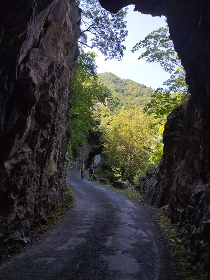
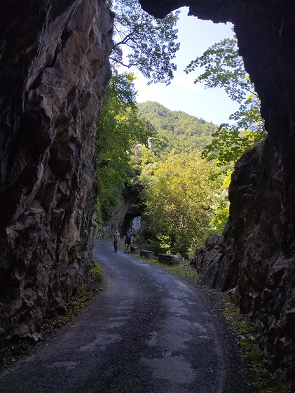

Après le percement de la Nationale 118 suivant l'Aude, l'ancien chemin Vauban reliant Quillan ou Puivert à Mont Louis fut abandonné.
Aussi, les villages qui se trouvaient sur les contreforts du petit plateau de Sault dans les hauteurs de l'Aude, traversés par cette route Vauban se retrouvèrent alors très isolées
Une route partant de l'ancienne nationale 118 fut alors percée pour donner un accès aux communes de Fontanès de Sault et de Campagna de Sault.
La route reliant les 2 communes fut améliorée, avec le percement d'un tunnel sous l'ancien chateau de Dournès, mais n'est resté qu'un large chemin de terre.
(La nationale 118 a été déclassée depuis en Route départementale 118.)
Vue du cours de l'Aude (même si on n'aperçoit pas la rivière), vers Bessède et Le Clat
 


Vue du château d'Usson